Hướng dẫn cách tra cứu hóa đơn GTGT, cách tra cứu hóa đơn điện tử hợp lệ, cách kiểm tra hóa đơn đầu vào có hợp pháp hay bất hợp pháp, hóa đơn thật hay giả trên tracuuhoadon.gdt.gov.vn và hoadondientu.gdt.gov.vn của Tổng cục thuế.
Chú ý:
- Nếu hóa đơn bạn muốn tra cứu là Hóa đơn giấy, hóa đơn mua của Cơ quan thuế, hóa đơn điện tử theo quy định cũ (theo Thông tư 32/2011/TT-BTC) => Thì các bạn tra cứu theo Cách 1 dưới đây.
+) Lời khuyên: Đối với trường hợp này thì khi nhận 1 hóa đơn đầu vào (dù là hóa đơn điện tử, hóa đơn GTGT hay hóa đơn bán hàng) trước tiên các bạn kiểm tra xem hóa đơn đó có bị sai sót gì không. -> Tiếp đó các bạn tra cứu xem hóa đơn đó có hợp pháp hay không.
Đặc biệt nếu bạn muốn tra cứu hóa đơn điện tử có mã của cơ quan thuế, không có mã của cơ quan thuế, hóa đơn điện tử đầu vào, hóa đơn điện tử đầu ra trên trang Hoadondientu.gdt.gov.vn thì các bạn xem chi tiết tại đây:
Dưới đây Kế toán Diệu Tâm xin hướng dẫn cách tra cứu hóa đơn theo quy định cũ và theo quy định mới, cụ thể như sau:
Cách 1: Tra cứu hóa đơn theo quy định cũ:
- Truy cập vào website tra cứu thông tin hóa đơn của Tổng cục thuế (Bộ tài chính):
Lưu ý: Nên mở bằng trình duyệt Internet Explorer để hạn chế lỗi nhé.
Bước 2:
- Chọn hình thức tra cứu: “Tra cứu một hóa đơn” hoặc "Tra cứu nhiều hóa đơn"
- Nếu chọn mục "Tra cứu nhiều hóa đơn" thì các bạn chuẩn bị 1 file Excel thông tin hóa đơn cần tra cứu nhé và File Excel đó phải được thiết kế theo các quy định như trên website tra cứu nhé.
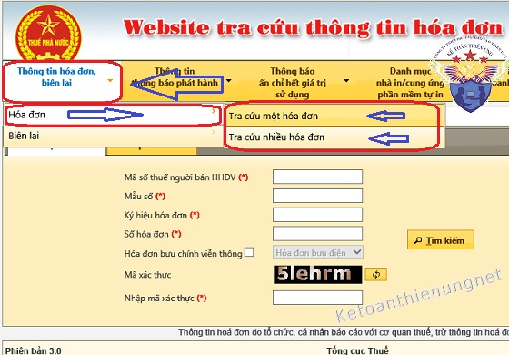
Bước 3:
- Nhập đầy đủ 5 chỉ tiêu (có dấu (*)) như:
Mã số thuế.
Mẫu số
Ký hiệu hóa đơn
Số hóa đơn
Mã xác thực -> Xong thì bấm Click “Tìm kiếm”.
- Nếu muốn tra cứu các loại hóa đơn khác như: Bưu điện, bưu chính, viễn thông, invoice. Các bạn click vào: “Hóa đơn bưu chính viễn thông”.
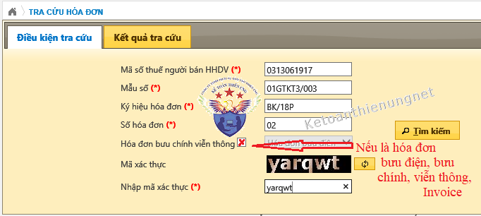
-------------------------------------------------------------------------------------------
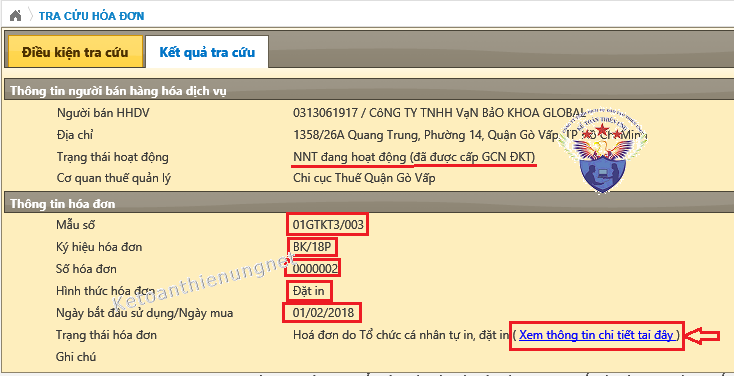
Bước 4: Kiểm tra kết quả tra cứu hóa đơn như sau:
1. Nếu tra cứu Hóa đơn GTGT kết quả chính xác như sau:
Ví dụ 1: Tra cứu hóa đơn GTGT đặt in, kết quả như sau:
-> Tiếp đó: Bấm vào (Xem thông tin chi tiết tại đây) => Sẽ hiển thị đầy đủ các thông tin sau:
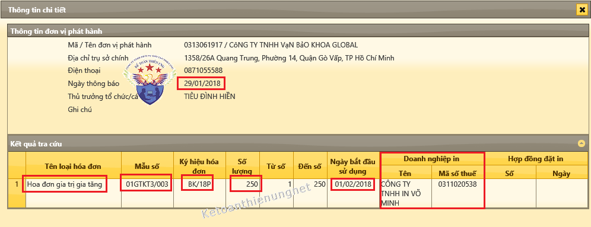
Kết quả:
a. Nếu kết quả tra cứu như trên, tức là có đầy đủ:
- Thông tin người bán hàng
- Thông tin hóa đơn.
- Thông tin về Doanh nghiệp in.
=> Thì các bạn yên tâm về hóa đơn này là hợp pháp.
------------------------------------------------------------------------------------------
b. Nếu kết quả không như trên:
Ví dụ như: Chỉ hiển thị được "Thông tin người bán hàng hóa dịch vụ"-> Còn "Thông tin hóa đơn" thì không hiển thị.
-> Hóa đơn này có thể là chưa thông báo phát hành hóa đơn hoặc làm thông báo phát hành nhưng chưa được cơ quan thuế chấp nhận .v.v...).
Cách xử lý: Liên hệ ngay với bên bán hàng để kiểm tra lại xem họ thông báo phát hành hóa đơn chưa. (Nếu rồi thì chụp ảnh cho xin Thông báo phát hành hóa đơn của họ đã được cơ quan thuế Chấp nhận).
- Hoặc có thể do các bạn mở bằng trình duyệt Google chrome, Cococ... Nên các bạn có thể mở lại bằng trình duyệt Internet Explorer xem sao nhé.
----------------------------------------------------------------------------------------
Ví dụ 2: Tra cứu hóa đơn điện tử theo quy định cũ:
- Ví dụ: Đây là bản chuyển đổi hóa đơn điện tử thành hóa đơn giấy:
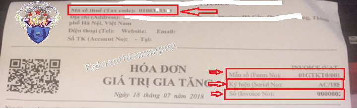
- Sau khi nhập thông tin => Kết quả sẽ như sau:
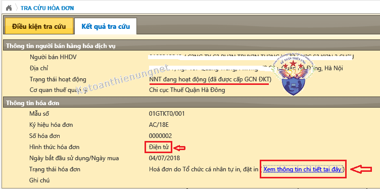
- Khi bấm vào (Xem thông tin chi tiết tại đây), hiển thị các thông tin như sau:
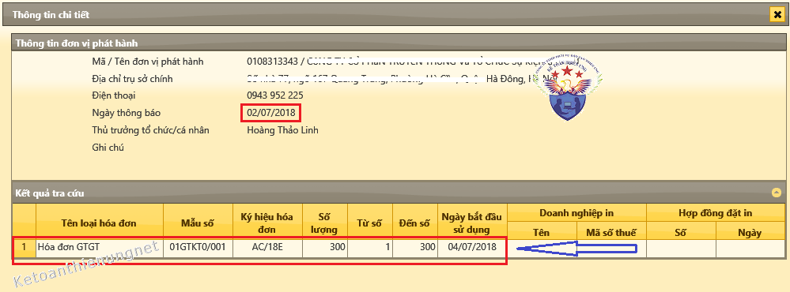
- Nếu kết quả như trên là hóa đơn hợp pháp nhé.
- Nếu kết quả Không như trên -> Thì cách xử lý như trên phần tra cứu hóa đơn GTGT giấy bên trên nhé.
------------------------------------------------------------------------------------
Chú ý: Trường hợp hủy hóa đơn điện tử theo quy định cũ:
- Ví dụ: Công ty bạn ở địa bàn Hà Nội đang sử dụng hóa đơn điện tử theo Thông tư 32 => Cơ quan thuế yêu cầu phải hủy hóa đơn điện tử cũ này đi, để đăng ký sử dụng hóa đơn điện tử theo Thông tư 78, NĐ 123.
-> Sau khi đã làm xong thủ tục hủy hóa đơn điện tử cũ, các bạn đã nộp Thông báo kết quả hủy hóa đơn qua mạng (Thì trên trang thuedientu sẽ chỉ nhận được Thông báo là đã tiếp nhận -> Sẽ không có Thông báo là đã hủy thành công trên đó đâu nhé).
=> Muốn biết DN m đã hủy thành công hay chưa thì bạn phải trang tracuuhoadon (theo đường link bên trên) để tra cứu.
Cách tra cứu hóa đơn hủy như sau:
- Các bạn cũng gõ các thông tin trên hóa đơn như bình thường thôi nhé => Chỉ khác là khi gõ đến phần "Số hóa đơn" => Thì các bạn gõ số hóa đơn nằm trong khung số hóa đơn hủy nhé.
Ví dụ: DN bạn hủy các số hóa đơn từ 60 -> 2000: Thì các bạn gõ vào phần "Số hóa đơn" là số 60 hoặc 61 trở đi, đến số 2000 là được nhé).
=> Kết quả tra cứu, sẽ hiển thị thêm mục "Ghi chú", cụ thể như dưới hình ảnh nhé:
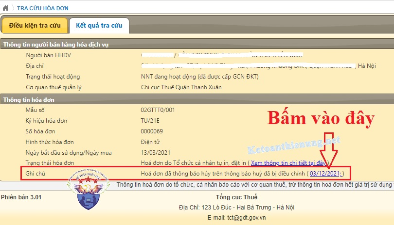
- Tiếp đó là bấm vào phần (ngày tháng năm làm Thông báo kết quả hủy hóa đơn điện tử) => Sẽ hiển thị "Thông tin thông báo hủy hóa đơn" cụ thể như sau:
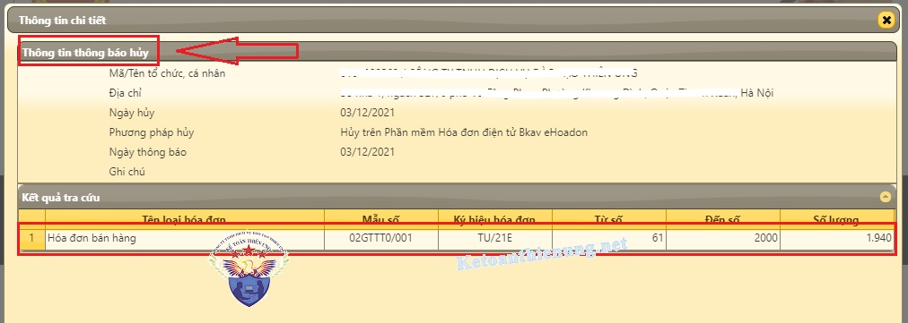
-> Kết quả như trên là các bạn đã hủy hóa đơn theo quy định cũ thành công nhé!.
----------------------------------------------------------------------------------------------
2. Nếu tra cứu Hóa đơn bán hàng mua của Chi cục thuế:
=> Thì sẽ chỉ hiện thị Thông tin của DN mua hóa đơn thôi nhé (Không có thông tin của hóa đơn)
- "Thông tin người bán hàng hóa dịch vụ" mà hiển thị đúng với "Thông tin trong dấu mộc vuông trên hóa đơn bán hàng" là đúng nhé.
- Thông tin hóa đơn sẽ không hiển thị gì (Vì đây là hóa đơn bán hàng mua của Cục thuế, do Cục thuế quản lý)

----------------------------------------------------------------------------------
Cách 2: Tra cứu hóa đơn điện tử theo quy định mới:
- Như mình đã nói ở phần trên: Những DN sử dụng hóa đơn điện tử theo quy định mới là Thông tư 78, Nghị định 123: Thì sẽ tra cứu hóa đơn điện tử trên trang web dưới đây nhé:
Lưu ý: Nên mở bằng trình duyệt Internet Explorer để hạn chế lỗi nhé.
Các bạn truy cập vào: hoadondientu.gdt.gov.vn
(Đây là web của Tổng cục Thuế nhé)
- Bấm vào mục “Tra cứu hóa đơn điện tử”
-> Nhập các thông tin bắt buộc ở những mục có dấu sao (*) như:
MST người bán (*)
Loại hóa đơn (*)
Ký hiệu hóa đơn (*): Chú ý phần này các bạn bỏ số 1 đầu tiên đi nhé.
Ví dụ: Ký hiệu hóa đơn là: 1C21TTU -> Thì gõ vào là: C21TTU
Số hóa đơn (*)
Tổng tiền thanh toán (*)
-> Nhập Mã captcha -> Rồi bấm “Tìm kiếm”
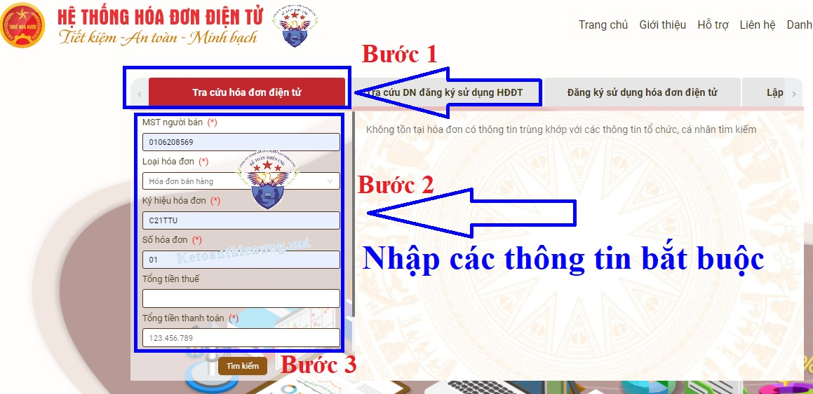
- Nếu là hóa đơn có mã của cơ quan thuế hợp pháp (Đã được cấp mã hóa đơn) thì kết quả như dưới đây:
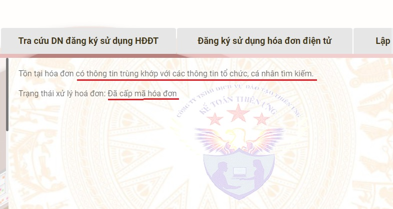
Các bạn muốn tìm hiểu chuyên sâu hơn về hóa đơn, kê khai thuế GTGT, TNCN hàng tháng - Quý, cách lập Tờ khai Quyết toán thuế TNCN, TNDN, kỹ năng quyết toán thuế....
- >Có thể tham gia: Lớp học kế toán thuế chuyên sâu tại Công ty kế toán Diệu Tâm
------------------------------------------------------------------------